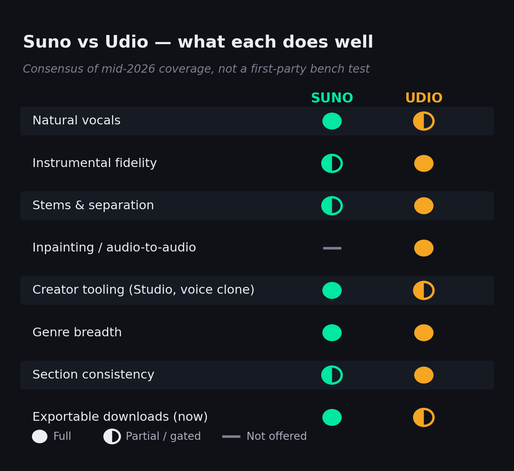

Search “Suno vs Udio” and you get a wall of blog posts that all say the same thing: Suno is easier, Udio sounds better, try both. That was a fair answer in 2024. In 2026 it is dangerously incomplete — because the most important difference between these two AI music generators is no longer how they sound. It is whether you can keep the music you make. One of them still lets you download your songs and release them commercially. The other, after settling with the major labels, currently does not. This guide is the honest head-to-head the vendor blogs won’t write: verified pricing, the licensing split that changed everything, where each genuinely wins, and a defended decimal verdict you can actually act on.
The all-rounder, and the safer default for finished songs. Best vocals, most complete tooling, and — the decider in 2026 — you can still download and release what you make.
Best for: songs with vocals, content creators, anyone who needs to ship and monetize now.
The craftsman’s tool. Higher instrumental fidelity, deeper stem and inpainting control — held back right now by its own settlement, which restricts downloads on the live service.
Best for: producers chasing fidelity and granular control who can work around the export limits.
The honest caveat: the scores are close and the pick is use-case-driven, not absolute. Many serious creators end up paying for both (about $20/month total) because each wins a different third of the work. Whatever you choose, the platform’s commercial license does not shield you from copyright risk while the labels are still in court — more on that below.
This article contains affiliate links. If you subscribe through our links we may earn a commission at no extra cost to you. It does not change the verdict — the analysis below runs the same whether you click or not.
What Changed in 2026: The Question Isn’t “Which Sounds Better”
For two years, choosing between Suno and Udio was an audio question. Suno was the friendlier, more reliable option that turned a text prompt into a complete, catchy song in seconds. Udio was the one audio nerds preferred — slightly more realistic, with finer control. You picked a lane and moved on. The reason that framing has aged badly is that the music industry stopped fighting AI music and started licensing it, and the two companies took opposite roads through that change.
In late 2025 the major labels — who had sued both companies in mid-2024 — began settling. Udio settled first, with Universal Music Group, and the price of that peace was a shift toward a tightly controlled, label-approved platform. Suno settled with only one major, Warner, on looser terms, and kept fighting the rest. The practical fallout landed squarely on users: Udio restricted the ability to download finished tracks during its transition, while Suno’s paid users kept exporting and releasing as before. That single operational difference now matters more to a working musician than any blind A/B test of vocal quality, because a song you cannot export is a song you cannot release. So this comparison leads with what each platform actually is today, treats sound quality as one important input rather than the whole story, and spends real time on the licensing reality that the listicles skip.
The stakes also explain why this is a serious decision and not a toy. Suno alone reported more than two million paying subscribers in early 2026 and a roughly $300 million annual revenue run rate, and in June 2026 it raised $400 million at a $5.4 billion valuation — more than double its valuation six months earlier. This is now a real tool that real careers run on, which is exactly why getting the trade-offs right is worth twenty minutes.
That scale is also reshaping the platforms that distribute music. Deezer has reported that a large and fast-growing share of the tracks uploaded to it each day are now AI-generated, and Spotify has tightened enforcement against AI-driven streaming fraud and undisclosed AI uploads. The practical signal is twofold: AI music is now mainstream enough that distributors and streaming services are building specific rules around it, and those rules increasingly hinge on disclosure and provenance. Which platform you generate on, and whether you can prove your commercial rights, is becoming part of the release process rather than an afterthought.
What Suno and Udio Each Are
Suno is the mass-market all-rounder. You type a description — or paste your own lyrics with structure tags like [Verse] and [Chorus] — and it returns a finished, mixed song with vocals and instrumentation in well under a minute. Its spring-2026 generation (Suno’s v5-series model) is built around expressiveness and personalization: more natural vocals, longer song lengths, voice and custom-model features, and an in-browser workstation called Suno Studio that adds stem-level editing for power users. It is the platform most people mean when they say “AI music,” and it is tuned to get a non-musician to a shareable song fast.
Udio is the craftsman’s tool. Founded by former Google DeepMind researchers, it built its reputation on raw audio fidelity — output that listeners frequently describe as hard to tell apart from a real recording — and on production-grade controls: strong stem separation, audio inpainting (regenerating a slice of a track in place), and audio-to-audio remixing. Its 2026 update, often referred to as the v3.5-series, added an arrangement system and a consistency feature (“Cohesion”) that keeps a song’s palette and vocal character stable from section to section, addressing its long-standing weakness where parts of one track could sound stitched together. Where Suno optimizes for a great first draft, Udio optimizes for control over the result.
The contrast extends to the companies themselves, and it colors how each tool evolves. Suno, based in Cambridge, Massachusetts and led by CEO Mikey Shulman, is the heavily funded giant of the category — hundreds of employees, roughly $775 million raised in total, and a release cadence aimed squarely at the mass market. Udio is the smaller, leaner operation built by former Google DeepMind researchers, with a craft-focused reputation and a much smaller team. That difference shows up in the products: Suno ships broad, consumer-friendly features quickly, while Udio has historically gone deeper on audio quality and producer controls. Neither posture is automatically better — but it explains why Suno feels like a fast-moving platform and Udio feels like a specialist instrument.
Version naming for both tools is genuinely inconsistent across third-party coverage — you’ll see Suno called v5 and v5.5, and Udio called v1.5, v3.5 and v4 in different posts from the same month. We describe each by its current generation rather than chasing a precise decimal a stale blog might have wrong. Before you rely on a specific model name, confirm it in the app or on the vendor’s own site; the capabilities below hold regardless of the badge.
Sound Quality, Genre by Genre
Here is the honest shape of it: neither platform is globally “better.” Each wins roughly a third of the genres meaningfully, and the rest are close enough that prompt skill matters more than the engine. The reliable pattern, drawn from the consensus of recent hands-on coverage rather than a first-party bench test, is that Suno leads where a convincing human vocal carries the song — pop, rock, country, singer-songwriter, R&B — and Udio leads where instrumental realism and texture carry it — cinematic, electronic, jazz, lo-fi, vintage-soul sample material, and dense arrangements. The capability map below summarizes where each is strong, partial or absent.

Where each platform is strong, partial or absent — consensus of mid-2026 coverage, not a first-party measurement.
Two practical takeaways. First, if you produce instrumental beds, sample fodder, or anything where the listener is judging the sound rather than a singer, Udio’s fidelity edge is real and you will hear it. Second, if your track lives or dies on a believable lead vocal, Suno’s vocal engine will save you a dozen regenerations. The genres in the middle — hip-hop, EDM, ambient — come down to which one happens to nail your specific prompt that day, which is the strongest argument for keeping a free account on both while you learn their dialects.
It’s also worth calibrating the “indistinguishable from a real recording” praise that follows Udio around. On a casual listen — phone or laptop speakers — the best outputs from either platform genuinely can pass. On studio monitors, and especially across a full arrangement, AI artifacts still surface: smeared transients, a slightly synthetic top end, the occasional uncanny vocal consonant. That gap is closing fast, but if your work will be judged on a good system, plan to finish the track properly rather than treating any raw generation as a final master.
Drilling into specific genres makes the pattern concrete. For mainstream pop and country, Suno’s vocal lead usually carries the day — the hook sounds sung, not synthesized. For rock and R&B it’s close, with Suno ahead on the vocal and Udio sometimes ahead on the instrumental bed. For cinematic, orchestral and ambient work, where there’s no lead vocal to judge, Udio’s fidelity edge is most audible. Electronic and lo-fi split by sub-style and prompt. And for jazz and vintage-soul textures — the kind producers sample — Udio’s realism and stem control make it the better raw-material factory. None of this is absolute; a well-crafted prompt on the “wrong” platform routinely beats a lazy one on the “right” one.
A practical note on getting the best out of either: both reward specificity and iteration. A prompt that names the genre, tempo feel, instrumentation, vocal type and reference mood will outperform a vague one every time, and the first generation is rarely the keeper — budget for several rolls, then extend or inpaint the best one. This is also where the credit math bites, since every roll spends credits, and it’s a big part of why the free tiers feel generous until you actually try to finish something.
Vocals: Suno’s Real Edge
Vocals are the one axis where the gap is wide enough to be decisive. Suno’s spring-2026 model is widely described as the first that consistently fools casual listeners — the phrasing breathes, the vibrato lands in the right places, and the emotional dynamics rise and fall like a real take rather than a flat read of the lyric. For a pop hook or a country verse, that is the difference between a demo and something you would actually put out. Udio’s vocals are good and have improved, and on certain stylized or layered vocal textures it competes — but for the specific job of a convincing, front-and-center sung lead, Suno is the stronger tool more often than not.
It’s worth being specific about what “better vocals” buys you. Suno tends to handle harmonies, ad-libs and multi-section vocal arrangements more gracefully, holds a consistent vocal character across a longer song, and copes better with dense or fast lyrics without slurring. It also leads on personalization — voice and custom-model tools that let you steer toward a particular vocal identity — though, as both platforms move to licensed and opt-in voices under their settlements, expect those features to be increasingly fenced toward authorized use. If your project is genuinely vocal-first, that combination of realism, consistency and control is the strongest single reason to start on Suno.
The caveat is that “better vocals” is also where AI music is most legally exposed, because a vocal that sounds like a specific artist is exactly the kind of output a rights holder will scrutinize. Both platforms have moved toward licensed voices and opt-in artist participation as part of their settlements, which is genuinely the safer path — but it also means the wild, anyone-sounds-like-anyone era is closing. If your creative idea depends on a particular voice, read the licensing section before you build a release plan around it.
Licensing & Commercial Rights: The 2026 Divergence
This is the section the vendor blogs leave out, and it is the one most likely to affect whether you can release your music. In June 2024 the Recording Industry Association of America sued both Suno and Udio on behalf of Universal, Sony and Warner, alleging the companies trained their models on copyrighted recordings without permission. Both argued the training was fair use. Then, through late 2025 and into 2026, the picture fractured — and the two companies diverged sharply.
![Timeline of the 2026 AI music licensing split. Shared origin: June 2024 the major labels sue both Suno and Udio. Udio path: settles with UMG October 2025, settles with Warner November 2025, adds Merlin and Kobalt licenses late 2025 to early 2026, moves to a walled-garden platform in 2026 with downloads turned off on the live service, with Sony still litigating. Suno path: settles and licenses with Warner November 2025, downloads and commercial rights remain intact, in May 2026 labels move to add 61,026 works raising potential exposure to about 9.1 billion dollars, a GEMA ruling in the EU is due July 31 2026, with UMG and Sony still litigating](../images/suno-vs-udio-licensing-timeline.png)
Same lawsuit, two very different paths — and two very different realities for users today.
Udio chose the licensed road. It settled with Universal in October 2025, then Warner in November, then signed deals with the independent-label coalition Merlin and with Kobalt. The trade was a move toward a “walled garden”: a controlled platform, trained on authorized and opt-in catalog, where users create music but cannot freely export it and post it elsewhere. As that transition began, Udio restricted downloads on its live service — offering only a brief grace window for existing tracks — and amended its terms of service. For a producer, that is the headline: on Udio’s current service, the WAV-and-stems export that historically justified its Pro tier has been curtailed. Sony, notably, is still litigating against Udio.
Suno chose to fight, mostly. It settled with Warner in November 2025 and announced a licensing partnership — on terms widely reported as looser than Udio’s — but it did not settle with Universal or Sony, and it is contesting those cases on fair-use grounds. Crucially, Suno did not lock its existing service behind a wall: paid users continue to download and commercially release their music. The cost of that defiance is legal risk that is still very much live. In May 2026 Universal and Sony moved to expand their case against Suno from 560 works to 61,026 after fingerprinting analysis of its training data — a roughly 100-fold jump that, at up to $150,000 per infringed work, pushes potential damages from about $84 million to more than $9.1 billion. A summary-judgment hearing is set for mid-2026, and separately a German court (GEMA v. Suno) has a closely watched ruling due July 31, 2026, in the EU — a court that already ruled against OpenAI on lyrics reproduction in late 2025.
What this means for you is blunt: a commercial license from either platform is step one, not a shield. The settlements are not an admission of guilt, but they are also not a clean bill of health. If a label later proves a specific output is substantially similar to a protected recording, the platform’s license will not cover your defense — you bear that. Practically: prefer paid tiers for the commercial grant, disclose AI use to your distributor, keep your generation records, and don’t build a release around a track that obviously imitates a known song. If you want to pressure-test a specific track’s exposure, our AI Music Rights Navigator walks you through the questions that matter.
Step back and the settlements have a logic worth understanding. For the labels, a licensed AI platform turns an existential threat into a new revenue line and a way to compensate — and control — how their artists’ work trains these models. Udio’s deals reportedly route toward opt-in participation and compensation for rights holders, which is why its future platform is walled: the labels want the upside without their catalog leaking out as free downloads. For artists who hate the idea of uncredited training, that’s a genuine improvement; for creators who just want to make and release tracks freely, it’s friction. Suno’s looser posture preserves that freedom for now — at the cost of the legal cloud that still hangs over it.
The cases that remain unsettled are the ones to watch, because their outcomes could reshape both products. If a US court rules that training on copyrighted recordings without a license is not fair use, the pressure on Suno to settle on the labels’ terms — and to wall its own garden — would intensify. If the fair-use defense prevails, the balance tilts back toward the platforms and looser terms. The German GEMA case opens a parallel European front. The honest summary in mid-2026 is that the rules are still being written, so the smart move is to keep your options — and your local files — open, and to avoid betting a release on any track that obviously imitates a specific famous record.
None of this should scare you off using these tools — millions of people release AI-assisted and AI-generated music every month — but it should make you deliberate. The low-risk path is straightforward: generate on a paid plan so the commercial grant applies, keep records of when and how each track was made, disclose AI use honestly to your distributor (most now have an AI field at upload), and steer clear of prompts that ask for a named artist’s voice or an obvious soundalike of a specific hit. Do that and you’re operating in the same space as the rest of the independent release ecosystem rather than out on a limb.
Pricing & Plans
On headline price the two are almost identical — both start free and run about $10 a month for the entry paid tier — so price alone won’t decide it. What decides it is what each tier actually unlocks, and the catches buried in the credit math. Here are the current published tiers; confirm the live numbers on each vendor’s pricing page before paying, because credit allotments move.
| Tier | Suno | Udio |
|---|---|---|
| Free | ~50 credits/day (~10 songs); non-commercial; may serve an older model | ~10 credits/day + ~100/month fallback; non-commercial |
| Entry paid | Pro — $10/mo (~$8 annual); ~2,500 credits; commercial rights; full current model | Standard — ~$10/mo; ~2,400 credits; high-quality export tier; no daily cap |
| Top tier | Premier — $30/mo (~$24 annual); ~10,000 credits; adds Suno Studio (in-browser DAW) | Pro — ~$30/mo; ~6,000 credits; commercial rights; parallel generation |
| Downloads | Available on paid plans | Restricted on the live service during the UMG/Warner transition — verify current status |
On Suno, the commercial right attaches only if you were a paid subscriber at the moment you generated the track. Upgrading after a free-tier song takes off does not grant retroactive rights to that earlier track. If you might ever release a song, generate it on a paid plan from the start. Separately, watch the credit math on both: extends, remixes, regenerations and stem operations each spend credits whether you keep the result or not, and free credits generally expire rather than roll over.
One more honesty note that belongs here: Suno has drawn recurring complaints about billing — subscriptions that are awkward to cancel and accrued credits that vanish at the end of a cycle. Name it plainly when you weigh the “value” line, and treat the cancel flow as something to test before you commit a year up front.
On which tier to actually pick: for most people the ~$10 entry plan on either platform is the right starting point once you’ve chosen your default engine — it unlocks commercial rights and the current model without the top-tier price. Step up to the $30 tier only if you specifically need what it adds: Suno’s Premier for Suno Studio and the larger credit pool, Udio’s Pro for more credits and parallel generation. Annual billing shaves roughly 20% off if you’re confident you’ll stick with it, but given how fast both the products and the legal picture are moving, paying monthly for the first few months is the lower-risk play. And budget realistically for credits: a single productive session of regenerating, extending and stem-splitting can burn through a day’s free allotment fast, which is the real reason most serious users end up paying.
The free tiers deserve a closer look because they shape how people first judge each tool. Both let you generate without paying, but the output is generally non-commercial, and on Suno the free tier can serve an older model than the one paid users get — so a free-tier first impression may undersell what the paid model actually does. Use free deliberately: it’s the right way to decide which platform suits your music, but the wrong place to judge top-end quality or to make anything you intend to release.
Workflow & Tooling
Beyond the raw generation, the two diverge in how much they let you shape a result, and that maps cleanly onto their philosophies. Suno’s tooling is built to get you from idea to finished, shareable song with the least friction: custom lyrics with structure tags, song editing, voice and custom-model features, and — on the Premier tier — Suno Studio, an in-browser workstation that exposes stems and editing for people who want to go further. It is the more approachable end-to-end path, and for many creators the Studio is the reason to pay for the top tier. Worth knowing: power users describe the current Studio build as ambitious but rough, so weigh it as a promising work-in-progress, not a finished DAW. If prompt craft is your bottleneck, our Suno Prompt Optimizer helps you write inputs that land closer to what you hear in your head.
Udio’s tooling is built for control after the first generation. Inpainting lets you regenerate a specific slice of a track — fix a weak bar without re-rolling the whole song. Audio-to-audio remixing lets you feed in a reference and transform it. Its stem separation is a genuine strength for producers who intend to finish the track in a real DAW, chopping and re-arranging the pieces. The friction, again, is the current export restriction: those controls are most valuable when you can pull the result out to Ableton or FL Studio, and that is exactly the step Udio has limited during its transition. If and when downloads are fully restored, Udio’s editing depth is the stronger producer toolkit; until then, factor the export gap into the value.
If you do run both — the honest power-user answer — a clean division of labor emerges. Use Suno for anything vocal-led: write the song, get a strong sung take, and export it to release. Use Udio for instrumental beds, texture and sample material where fidelity matters, then pull the stems (when the service allows) into your DAW to finish. Because credits don’t transfer and each has a free tier, you can keep both accounts warm and route each idea to whichever engine suits it. The roughly $20/month combined cost is trivial against a single commissioned beat, and it means you’re never fighting the wrong tool for the job.
If your endgame is a polished master either way, an AI track usually still benefits from a finishing pass — see how AI mastering actually works before you call a generated track done.
Where the Rest of the Field Sits
Suno and Udio are the two that own the “full song from a prompt” category, but they aren’t the whole landscape, and knowing the neighbors helps you not force the wrong tool. Google’s Lyria line is the notable third name — it is the major model with a public developer API and strong built-in structural control, useful if you want programmatic generation or precise section timing. Stable Audio leans toward sound design and shorter audio assets rather than full vocal songs. ElevenLabs moved into music alongside its voice work. And tools like AIVA, Mubert and Boomy target royalty-free background beds and functional music rather than artist-style tracks. For most people choosing “which AI makes my song,” it is still a two-horse race between Suno and Udio — but if you need an API, structured composition, or pure sound design, the field has better-fit options. For the wider map, see our complete guide to AI music production tools, and for the assistant-style “co-producer” tools that help you run your DAW, our 2026 AI co-producers roundup.
One reason Suno and Udio dominate the conversation despite a crowded field is that “a complete song with vocals from a sentence” is genuinely hard, and they’re the two that do it well at consumer scale. The adjacent tools either solve a narrower problem — loops, sound design, functional background music — or sit upstream as infrastructure like APIs and structured composition. For a working artist, the realistic stack is one of these two as your generation engine, a distributor that accepts disclosed AI music, and a finishing tool for mastering — not a single app that does everything. Knowing where the boundaries are saves you from forcing a beat-bed tool to write your single, or expecting a song generator to behave like a sample library.
The Decimal Scorecard
Scored on what actually matters for choosing between these two in 2026, drawing on each vendor’s current documentation and the consensus of recent coverage rather than a first-party bench test. Scores are deliberately spread — honest gaps are more useful than tidy round numbers — and each decimal is defended in the “edge” column. The overall is close, as it should be, but it is not a tie.
| What we scored | Suno | Udio | The edge, and why |
|---|---|---|---|
| Vocal realism | 9.3 | 8.4 | Suno. The most natural sung leads — phrasing, vibrato, dynamics. Udio’s are good but trail on a front-and-center vocal. |
| Audio fidelity & stems | 8.6 | 9.2 | Udio. Output closer to “real recording,” with stronger stem separation and inpainting for granular work. |
| Genre breadth | 8.8 | 8.6 | Roughly even — each wins about a third of genres. Suno edges it on vocal-led styles, Udio on instrumental texture. |
| Workflow & tooling | 9.1 | 8.3 | Suno. The smoother end-to-end path plus Suno Studio. Udio’s editing is deeper but gated behind the export limits. |
| Rights & licensing clarity | 7.4 | 6.8 | Both murky. Suno keeps downloads but carries live UMG/Sony exposure and the “rights-at-generation” trap; Udio is cleaner on training but walls in your output. |
| Value | 8.7 | 7.9 | Suno. Same ~$10 entry, but you can actually export and release; billing complaints dent it. Udio’s value is hostage to the download restriction. |
| Overall | 8.6 | 8.2 | Suno wins narrowly on completeness and exportability-today; Udio is the fidelity specialist held back by its own settlement. |
Which One Is for You
Strip away the scores and it comes down to what you’re actually trying to make. The flow below is the fast version; the framework under it spells out the if/then.
A useful way to frame it: Suno is the safer default and Udio is the specialist addition. If you could only ever open one tab, Suno’s combination of vocal quality, tooling and — crucially — the ability to actually release what you make wins for the widest range of people. You reach for Udio when a specific job demands its fidelity or stem control and you’ve made peace with the current export limits. That ordering isn’t a knock on Udio’s craft; it’s a recognition that in 2026 the ability to ship a finished, owned file is doing a lot of the deciding.

The fast version — decide by the job, not by which one sounds “better.”
Before You Subscribe: Three Checks
Don’t take our word for it — or theirs. Run these three checks on free accounts before you pay, and you’ll know within an hour which one fits your music.
- Write one detailed prompt in your core genre — include mood, tempo, instrumentation and a vocal direction.
- Generate it on both Suno and Udio’s free tiers, twice each.
- Listen on headphones and rank them on two axes only: vocal believability and overall fidelity. Note which platform won your genre — that’s your default.
- On each platform, make a track you’d be willing to release.
- Try to download it — full file and, if offered, stems. On Suno (paid) this should be straightforward; on Udio, confirm exactly what the live service currently lets you export.
- Check each platform’s help center for the current commercial-use and download terms. If you can’t get a releasable file out, the “better sound” is moot for that use case.
- Export your best track (from whichever platform lets you) and run it through our Mix Fingerprint Analyzer against a commercial reference in the same genre.
- Compare loudness, true-peak and tonal balance — AI masters often sit hot and bright. Note what would need fixing before release.
- Decide whether the track is finish-ready or needs a mastering pass; that tells you whether your real workflow is “generate and ship” or “generate, export, finish in a DAW” — which in turn tells you which platform’s strengths you actually need.
Frequently Asked Questions
It depends on what you make, but for most people the answer is Suno. Suno produces the most natural vocals and the most complete creator tooling, and — the part that decides it in 2026 — paid Suno plans still let you download and commercially release your songs. Udio has the edge on raw instrumental fidelity and granular stem and inpainting control, but its live service currently restricts downloads during its label-settlement transition, which undercuts the one thing a finished track needs. If you mainly want releasable songs with vocals, choose Suno; if you want the highest-fidelity instrumental stems to chop in a DAW and can work around the export limits, choose Udio. Serious creators often subscribe to both.
On paid plans both grant commercial-use rights, but with two big caveats. First, on Suno the commercial right attaches only if you were a paid subscriber at the time you generated the track — upgrading after a free-tier song goes viral does not grant retroactive rights. Second, the platform’s commercial license does not shield you from copyright risk: the major labels are still litigating against both companies, and if a specific output is later proven substantially similar to a protected recording, you bear the legal exposure. Treat AI-music commercial rights as real but not bulletproof, and disclose AI use to your distributor.
After Udio settled with Universal and Warner Music in late 2025, it moved toward a “walled garden” model and restricted downloads on its live service during the transition, offering only a brief grace window for existing tracks. Reporting and Udio’s own help center indicate audio, video and stem downloads were disabled during this period, with the intention to re-enable later. Coverage has fluctuated, so check udio.com’s help center for the current status before you subscribe — if exporting finished files matters to you, this is the single most important thing to verify.
Suno is the consensus winner on vocals. Its spring-2026 model is widely described as the first that consistently fools casual listeners, with more natural phrasing, vibrato and emotional dynamics — especially for pop, rock, country and R&B with a lead vocal. Udio’s vocals are good and its overall production fidelity is often called more realistic, but for the specific job of a convincing sung lead, Suno is usually the stronger pick.
Udio. It is frequently described as producing audio that is hard to distinguish from real recordings, and it offers stronger stem separation plus inpainting and audio-to-audio remixing — the controls a producer wants when chopping samples or finishing a track in a DAW. Suno offers stems too, but its stem and Studio features sit on its top Premier tier, whereas granular instrumental control is closer to Udio’s core strength.
Both start free and run roughly $10/month for the entry paid tier. Suno offers Free (about 50 credits a day), Pro at $10/month (about $8 on annual billing, with commercial rights), and Premier at $30/month (about $24 annual) which adds Suno Studio. Udio offers a small free tier (about 10 credits a day plus a monthly fallback), Standard at about $10/month, and Pro at about $30/month, with commercial rights at the Pro tier. Credits do not transfer between the two services, and free generations generally do not roll over. Verify current numbers on each vendor’s pricing page before paying.
No. They are entirely separate companies and platforms with their own credit systems, models and accounts. If you subscribe to both — which many serious creators do, since each wins different jobs — you pay each separately and your unused credits on one have no value on the other. On both services, free-tier credits typically expire rather than roll over, so use them within the period.
The free tiers are good for learning and testing the sound, not for shipping releases. Free generations are usually non-commercial, sometimes serve an older model, and the daily credit caps disappear in a single creative session. On Suno in particular, the commercial right requires that you were a paid subscriber when you generated the track, so a song you make for free cannot simply be monetized later. Use free to decide which platform fits your music, then upgrade the one you’ll actually release with.